Example 2 · multi-phase, and two hints that hand over
Four workers, one person
Four professionals go in; one person who is none of them comes out, standing
in a workshop that two other units build between them. Three units, four Input tabs, and
the three partitions of unity side by side.
The references
chef
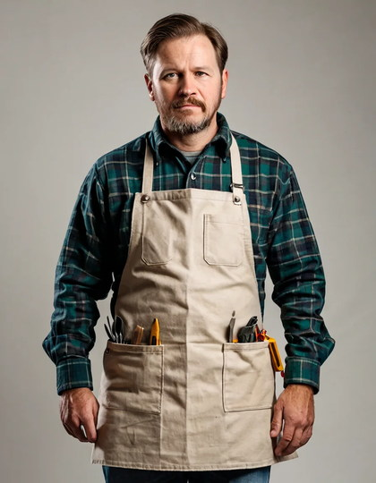
carpenterdoctorteacher
Four trades with four uniforms: whites and a neckerchief, an apron over flannel, a lab
coat and a stethoscope, a cardigan and a collar. Nothing about them agrees except that all
four are people at work.
Two hints, two different jobs
The scene comes from a second pair of units, and this is where the example earns its
keep — canny and depth are not interchangeable, and the difference is not strength:
Canny is a high-frequency constraint. It says there is an edge here
and says nothing about anywhere else. Empty floor carries no edges, so canny leaves the
floor free.
Depth is a low-frequency constraint covering every pixel. It does not say
"there is a wall here", it says this whole frame is this far away — including
the floor, which it positively asserts is empty.
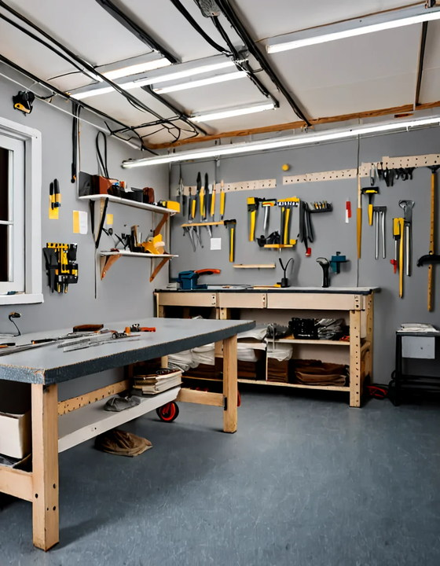
Depth of the empty room. The prompt asks for a worker. There is no
worker. The depth map says that floor is bare and it is believed.Depth of a staged room. Same everything, but the depth hint comes
from a photo with a figure standing at the bench — so there is a person-shaped volume
to fill.
So the two units are given different pictures, each the one it is good at
reading:
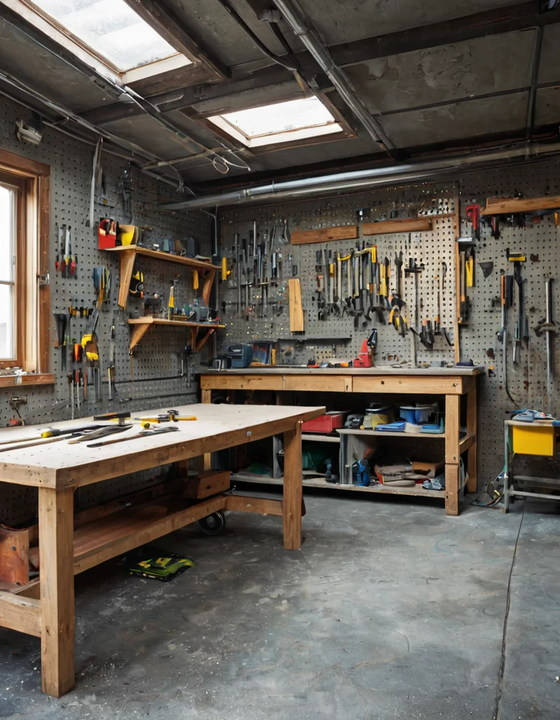
Canny gets the empty room — bench, pegboard, window. No figure, so
no traced face to fight the amalgam.Depth gets the staged shot — it contributes a standing volume in
the right place, and a depth map carries no identity to leak.
The hand-over, drawn
Both scene units then step aside on their own schedule, and the two curves are mirror
images of each other on purpose:
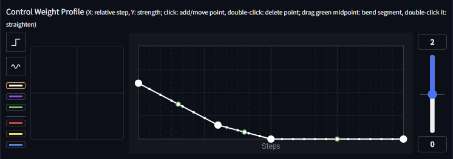
Depth leads and leaves. Full strength while the composition is
being decided, gone by the half-way point. Staging is an early job, and depth held
late flattens a face into a mask.
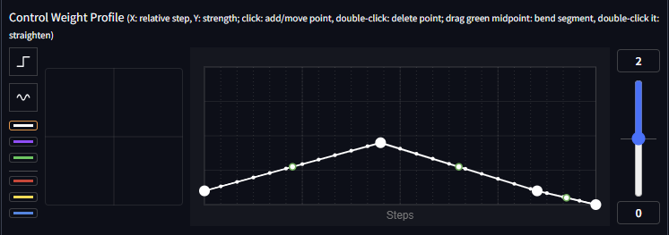
Canny arrives late. Almost silent at the start — early edges would
fix the room before the figure exists — peaking as the scene sharpens, then out of the
way for the last steps.
Read them together and they are one instruction: first say where the mass is, then
say where the lines are, then let the surfaces resolve on their own. Neither unit is
ever at full strength while the other is, which is what keeps a busy workshop from turning
into a traced drawing.
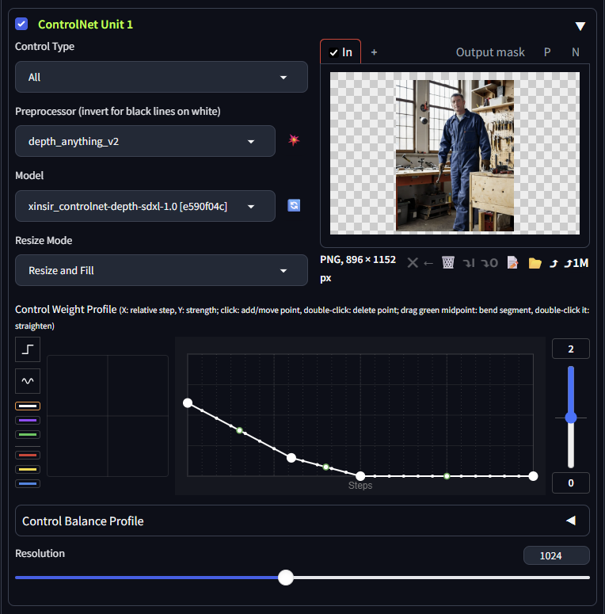
Unit 1 — depth_anything_v2 into an SDXL depth ControlNet, fed the staged photo.
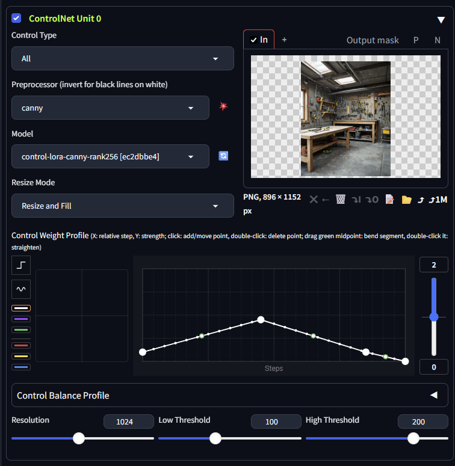
Unit 0 — canny, fed the empty room.
Four references in one unit
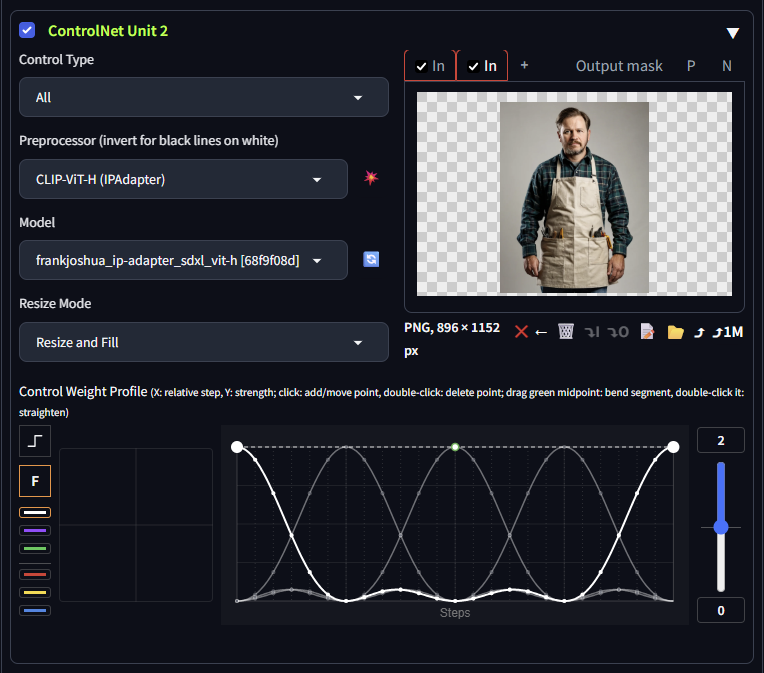
Unit 2 holds all four workers as Input tabs of a single unit — not
four units. The plot shows why that matters: the bright line is the wave this input
runs, and the faint ones are its three siblings, each shifted a quarter of a cycle
further along. The unit is drawing its own schedule.
Every panel below runs the same total pull: flat gives each of the four a
quarter, the partitions split one envelope of 2.0 between them. Nothing that follows is a
strength difference.
Flat
Everyone, every step
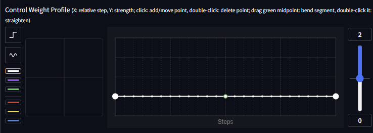
One flat line. All four references pull on every step.Grey coveralls and a generic face. Four uniforms averaged into none.
This is the failure the rest of the page exists to fix. Averaging four professionals
does not produce a person who is all four — it produces the most ordinary worker the model
knows, because the only thing four references agree on is the generic.
Cosine
The soft overlap
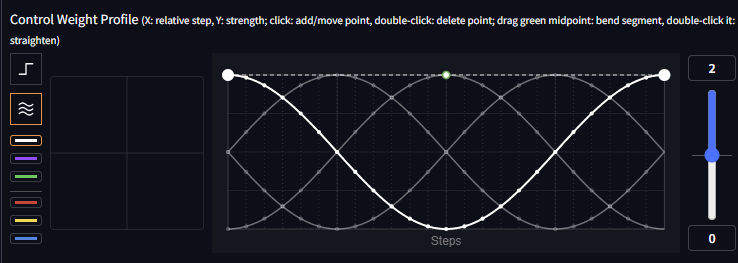
Each input eases in as the previous eases out — but look at the crossings: when one wave peaks its neighbours are still well off the floor.
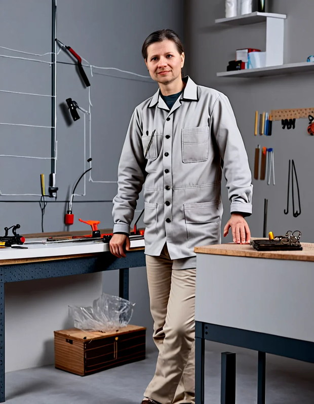
A light coat and a collar. Real garments now, but blended — no single reference ever had the schedule to itself.
Fejér
The clean hand-over
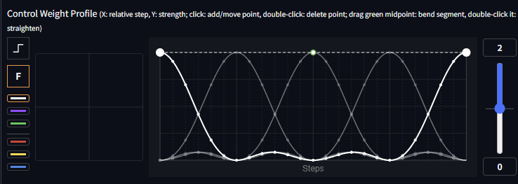
At each input's moment the others are exactly zero, not merely small. From three references up, that is a different picture rather than a tidier one.The chef's whites, the carpenter's apron line, the doctor's stethoscope, the teacher's collar — on one coherent uniform nobody actually wears.
von Mises
The overlap as a dial
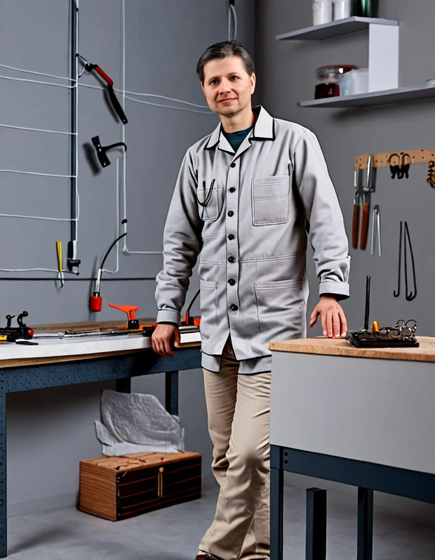
κ = 1. Broad, gentle hand-over — close to the cosine, and the details wash together the same way.κ = 8. Near-hard switching, and the borrowed details come back: pocket, stethoscope, apron edge.
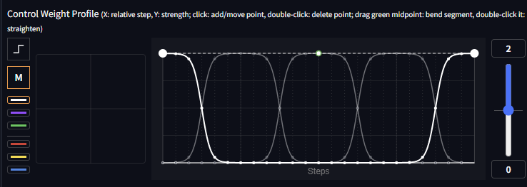
κ = 8 drawn: flat-topped plateaus with steep walls. One reference holds the
steps outright, hands over in a few, and the sum is still exactly the envelope. The pad's
x-axis is κ, so this is one drag from the cosine's shape.
The three families are not three qualities of the same thing. Cosine keeps everyone
slightly present, which suits two references and dilutes four. Fejér guarantees each one a
moment alone, and needs no setting. Von Mises makes that a continuum you can tune. All
three sum to the envelope at every step, which is why none of them makes the unit quieter
as you add references.
The result
One person, in a uniform assembled from four trades, standing where the
depth hint put them, in a room the canny hint sharpened.Same configuration, next seed.
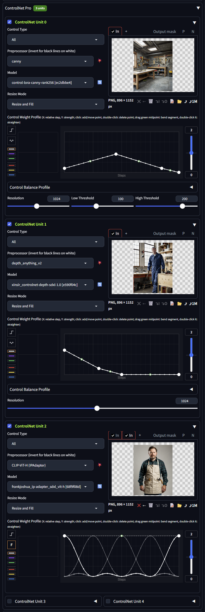
All three units as set.
Adapting it
Figure will not appear? Check the depth hint before touching weights — a
depth map of an empty scene forbids a figure far more effectively than a prompt can ask
for one.
References not showing through? Raise the envelope before adding waves. Four
inputs sharing an envelope of 1.0 give each a quarter of the pull a single input would
get at 1.0.
Blend too soft? Fejér, or von Mises with κ up around 8. Too abrupt?
Drop κ toward 1.
Scene traced instead of built? Canny is peaking too early or leaving too
late; it should be quiet while the composition forms.
Worth knowing before you try it on faces. Four faces converge on one
plausible person no matter how you schedule them — the model's prior for "one human face"
is far stronger than for "one object". What the schedule reliably buys you here is
everything around the face: which trade's cut, cloth and kit survive into the
final uniform.